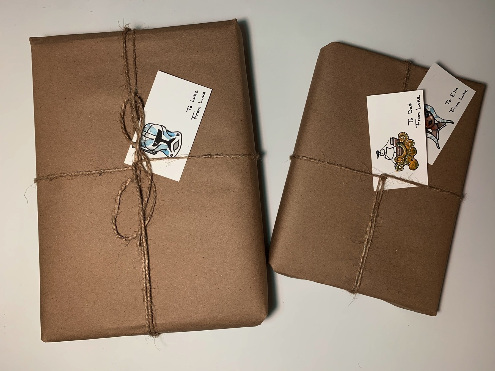

A few friends and I are about to launch our longboard-based apple pie delivery service. We bake ‘em, we give ‘em to the neighbors. Any good recipes you guys would recommend?
Princess Bride: “Why do you wear a mask?” “They’re terribly comfortable. I think everyone will be wearing them in the future.” 🍿
I’m building an adventure kit. I need ultra-useful things that can fit into a backpack. What kind of things are your go-to essentials?
I graduated this week. Had a tiny celebration with fewer than 10 people, social distanced, masks. I got a slide for my commencement ceremony, which was a glorified zoom call with hundreds of students. I’m still super excited to be done!
Anyone in Central Virginia, try Food For Thought for some patriotic fine dining. It’s super delicious.
Figured out, finally, how to wrap without using any tape. I’ve never felt more like a fake hipster. Little watercolors to add some spice to the labels. Each one gives a hint to what’s inside.
